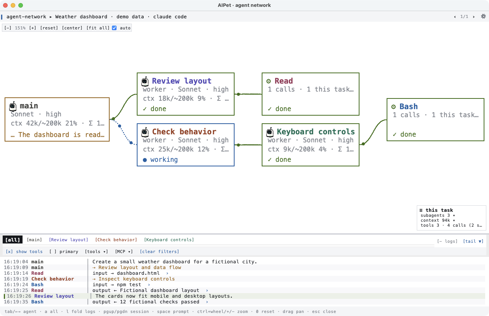

AIPet
A desktop pet for every AI session.
One little robot per Claude Code, Cowork or Codex session sits at the edge of your screen. It works while your agent works, jumps when it needs you, and naps when the job is done, so you can stop checking terminals.
Click a pet to jump to its session, or open the agent network to follow subagents and tools. Answer permission prompts and Claude's questions from the pet; Codex questions are answered in Codex.
Windows builds are unsigned; Mac builds are locally signed but not notarized by Apple. Your OS may ask you to allow the app on first launch.
![Animated AIPet robots: a working Claude CLI session humming with a wavy mouth under a scrolling terminal bubble, a Codex session in WSL hopping with check, cross and question-mark bubbles, a Claude session in WSL asking a question with a single question-mark bubble, a finished Cowork session with a green check seal, a session that hit an error shaking under a red cross, and an idle session asleep. Below, compact mode: one pet with three robots, where the first session that asked is in front; once it is answered, the next waiting session steps forward.](../../assets/img/aipet/pets-demo.gif)
Glanceable agents
Know what every session is doing without switching windows.
Run three agents in three terminals and the question is always the same: which one is waiting for me? AIPet answers it from the corner of your eye.
One pet per session
Every session gets its own robot, named after its project folder. Pets keep their place on screen, and small badges say where the session runs: Claude, Cowork, Codex, WSL or VS Code. Only the robot catches clicks, so the pets never block what is behind them.
States you can feel
Working pets bob and hum, with a scrolling terminal bubble and a slow blink. A pet that needs you jumps with a question mark and a soft two-note chime, and reminds you until you click it. Errors and usage limits show in red with the reason. Finished pets get a green check, then clear themselves after a timeout you choose.
Answer from the pet
Click the bubble to read a permission request before choosing Allow once, Allow + whitelist or Deny. Answer Claude Code questions with a choice, several picks or your own text. Browse queued prompts with the side arrows; Go to window opens the session and advances to the next waiting prompt. Codex questions are read-only in AIPet and answered in Codex.
Click to jump
Clicking a pet brings its terminal or app window to the front, switching to the right virtual desktop if needed. Sessions in the Claude desktop app bring up the app. For the Claude Code VS Code extension it raises the right VS Code window and asks the extension to show that conversation.
Red means you
The tray icon on Windows and the Dock icon on macOS are the robot too: white while things run, red when a session needs you.
Make it yours
Search the AIPet menu window for light or dark theme, pet size, tooltip text size, sounds, timers and approval rules. Use AIPet chimes or your system's sounds. The agent window has separate window and text scales, both starting at 100%. Settings saved in config.json apply automatically, and a copied settings guide lets your AI assistant help you change them.
Context and usage at a glance
See how much of a session's context window is in use, alongside separate account-limit badges when readings are available. Codex reports its context window; Claude's is estimated and marked as such. Hover for the source and reset times. Optional Claude usage collectors stay off until you enable them.
Stay on your desktop
Show pets across virtual desktops, including macOS full-screen Spaces. Session and usage tooltips open above the pet, with their own text-size control. On macOS, hovering or opening a prompt card leaves the current app in place; Go to window is the deliberate handoff.
Agent network
See the whole task, from the main agent to its tools.
Open Agent network window from the pet or tray menu for Claude Code and Codex. Follow one session in its own window, or bring several sessions together in a shared view.

Agents and their agents
The live graph links each subagent to the agent that started it, including nested branches. Nodes show names, models, reasoning effort and state when available. Select a tool node to see its inputs and results in the calling agent's log.
Logs you can actually follow
Switch between the combined activity log and individual agents. Filter messages, tools and MCP calls; expand a one-line entry to read or copy its full content. Move logs above, below or beside the graph, or fold them to a small bar to give the graph more room.
Context, tokens and tool counts
Read each agent's reported token totals and context usage, with estimates or incomplete history marked. Tool nodes distinguish calls in the current task from calls across the session. Context readings describe the model's current input; token totals describe usage so far.
Explore at your own scale
Pan, zoom, center or fit the whole graph. On a Mac trackpad, use two fingers to pan and pinch to zoom around the pointer. Separate window and text scales keep labels readable. Permission controls and supported question answers are available in this view too; Codex questions still open in Codex.
What's new in 0.7.0
A live view of the work behind every pet.
The 0.7.0 release brings the agent network, richer local logs and prompt navigation, with a smaller portable Windows package and Mac disk-image downloads.
Works with
Your agents, wherever they run.
AIPet listens through each tool's own hooks: small commands the agent runs at moments like "prompt sent", "tool used" or "finished". The setup window finds your installs and adds them for you, keeping your other settings and backing up every file first.
Downloads and installs
Download, run, pick your installs.
Builds are published on the GitHub Releases page: numbered versions, plus a rolling latest build for testing.
Windows
Download
AIPet-windows-x64.zip, extract the whole archive and run AIPet.exe inside the AIPet folder. Keep its companion files together; no installer is needed.
macOS (Apple Silicon)
Download AIPet-mac-arm64.dmg and drag AIPet to Applications, or unzip AIPet-mac-arm64.zip. Both downloads contain the same Apple Silicon app.
Latest test build
The rolling pre-release built from the newest commit, for trying fixes before a version is tagged.
Source and docs
Read the README for every option, or run AIPet from source with Python.
Download and run
Choose your platform on the Releases page. On Windows, extract the ZIP and run AIPet.exe inside its folder. On Mac, open the DMG and drag AIPet to Applications, or use the ZIP. A robot appears with a tray or menu-bar icon.
First launch
Windows: choose More info → Run anyway in SmartScreen. macOS: right-click the app and choose Open the first time, or use System Settings → Privacy & Security → Open Anyway.
Pick your installs
The setup window lists Claude Code and Codex in their own sections, including detected running WSL installs. Tick the ones to connect; nothing changes before you press Install.
Cowork and Codex extras
For Cowork, upload the plugin zip AIPet builds (menu: hooks → Cowork). For Codex, run /hooks in Codex and trust the AIPet hooks.
Start a new session
Only sessions started after installing show up. Hover a pet for details, click it to jump, right-click for the menu.
Privacy
Your session history stays local.
AIPet has no account, no telemetry and no server. Hooks write local status files; the agent view also reads your existing local transcripts for messages, tool activity and context. It does not upload those conversations.
Licensing
Free for everyone. Credit it, don't resell it.
Use, copy, modify and share AIPet freely, at home or at work. Forks and modified versions must credit AIPet by Duck Code. Selling AIPet, or a product built from it, needs a written agreement first.
Important notes
A cute robot with real permissions.
settings.json and Codex's hooks.json. Your other hooks and settings are kept, and Remove takes them out again.